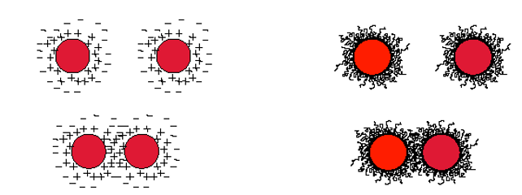
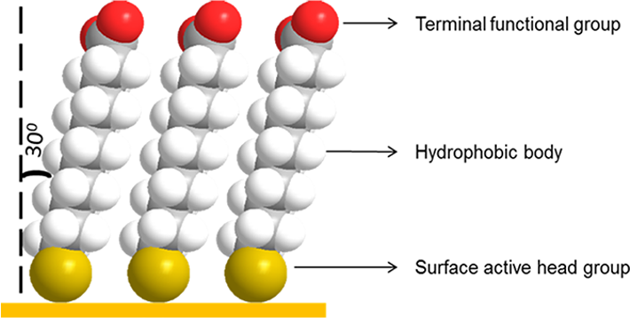

15 Colliodal Stability and Self-Assembled Monolayers.#
15.1 Colloidal Stability#
15.1.1 What is Colloidal Stability?#
Definition: The ability of nanoparticles to resist aggregation and flocculation.
Important for maintaining optical, electronic, and chemical properties.
15.1.2 Forces Affecting Nanoparticle Stability#
Attractive Forces (Cause Aggregation)
Van der Waals Interactions → Weak but cause particles to attract.
Magnetic & Electric Fields → Affect charged/magnetic nanoparticles.
Repulsive Forces (Prevent Aggregation)
Electrostatic Repulsion → Charged particles experience Coulombic repulsion.
Steric Hindrance → Polymer or surfactant layers physically block particles from aggregating.

Fig 15.1 Electrostatic and Steric Hinderance stabilisation.
15.1.2.1 Electrostatic Stabilisation of Nanoparticles#
When nanoparticles are dispersed in a liquid, they may acquire a surface charge due to:
Ionization of surface groups,
Adsorption of ions from the surrounding medium.
This charge leads to the formation of an electric double layer around each particle:
Stern layer: tightly bound counter-ions near the surface.
Diffuse layer: more loosely bound ions extending into the liquid.
As two charged particles approach, their electric double layers overlap, generating a repulsive electrostatic force that helps prevent aggregation.
The electrostatic repulsive force between two like-charged particles can be described by Coulomb’s Law:
\(F = \frac{1}{4\pi \varepsilon_0 \varepsilon_r} \cdot \frac{q_1 q_2}{r^2}\) where:
\( F \) = electrostatic force,
\(q_1\), \(q_2\) = charges on the particles,
\( r\) = distance between particle centers,
\(\varepsilon_0 \) = vacuum permittivity,
\( \varepsilon_r \) = relative permittivity (dielectric constant) of the medium.
Zeta potential (ζ) is a practical measure of this repulsion.
If |ζ| > 30 mV, the system is typically considered electrostatically stable.
DLVO Theory (Derjaguin–Landau–Verwey–Overbeek): Describes the total interaction energy as the sum of van der Waals attraction and electrostatic repulsion.
Stability arises when a potential energy barrier prevents particles from coming close enough to stick together.
Electrostatic stabilization is most effective in polar solvents (like water).
Increasing ionic strength (e.g., adding salt) compresses the double layer, reducing the range of repulsion and potentially leading to aggregation.
15.1.3 Steric Hindrance: How It Works#
Steric stabilization prevents nanoparticles from sticking together by using long-chain molecules or polymers adsorbed onto the particle surface.
When two particles approach, their coating layers overlap, creating a repulsive force that prevents aggregation.
15.1.3.1 Mechanism of Steric Hindrance#
Entropic Repulsion:
Overlapping polymer chains experience compression, reducing entropy.
Since entropy maximization is favored, this leads to repulsion.
Excluded Volume Effect:
Polymer layers physically occupy space, preventing particles from coming too close.
Solvent Interaction:
In a good solvent, polymer chains remain solvated and steric hindrance is maximized.
Comparison: Electrostatic vs. Steric Stabilization#
Feature |
Electrostatic Stabilization |
Steric Stabilization |
|---|---|---|
Mechanism |
Charge-based repulsion |
Polymer layer repulsion |
Medium Required |
Ionic solutions |
Organic solvents |
Salt Tolerance |
Poor (aggregation in high salt) |
High stability |
Applications |
Aqueous dispersions |
Non-aqueous nanomaterials |
Achieving Colloidal Stability#
Electrostatic Repulsion:
Particles acquire surface charges, leading to double-layer repulsion.
Steric Stabilization:
Polymers or surfactants coat the particles, preventing aggregation.
Surfactants & Self-Assembled Monolayers (SAMs):
Used to control surface properties and enhance stability.
15.2 Self-Assembled Monolayers (SAMs) and Thin Films#
15.2.1 What are Thin Films?#
Thin films modify a surface’s properties.
Used in biosensors, coatings, and nanoelectronics
15.2.2 Self-Assembled Monolayers (SAMs)#

Fig 15.2 A cartoon of a SAM and key components.
Definition: Single molecular layers that form spontaneously on a substrate.
Highly ordered structures due to self-assembly.
Headgroup with high affinity to the surface
Tail group providing functionality such as polar or non-polar - reactive or non-reactive and so on.
Alkyl chain the hydrocarbon chain separates the head and tail and this effects the order.
15.2.3 How the Alkane Chain Affects Order#
Longer alkane chains = Higher order:
Van der Waals interactions between chains increase stability.
Ordered layers reduce defects, improving functional performance.
15.2.4 Hexagonal Packing and Molecular Tilt Angle#
Hexagonal Packing:
SAM molecules arrange in a hexagonal lattice.
Each molecule interacts with six neighbors.
Provides high density, stability, and uniformity.
Molecular Tilt Angle:
SAM molecules do not stand perfectly upright.
Instead, they tilt (~30° from normal) to optimize packing.
Why does tilting occur?
Maximizes van der Waals forces between chains.
Reduces steric hindrance for dense monolayer formation.
15.2.5 Examples of Functional Groups in SAMs**#
Head Groups (Bind to the surface):
Thiol (-SH) → Binds to gold, silver, platinum.
Amine (-NH₂) → Binds to metal oxides.
Silane (SiX₃) → Binds to silicon, glass.
Carboxylic Acid (-COOH) → Binds to metal surfaces.
Tail Groups (Determine surface properties):
Hydrophobic (CH₃, CF₃, benzene)
Hydrophilic (-OH, -COOH, polyethylene glycol)
Reactive (-NH₂, -SH, -COOH)
15.2.6 How SAMs Influence Surfaces#
Change Surface Charge → Alters interactions with ions.
Modify Adhesion → Enhances or reduces material attachment.
Enable Chemical Reactions → Used in biosensing.
Resist Biomolecule Adsorption → Used in medical applications.
Alter Work Function → Used in electronics.
15.2.7 Applications of SAMs#
Biosensors → Functionalized surfaces for molecular detection.
Corrosion Protection → Prevents oxidation of metals.
Nanoelectronics → Modifies electrical conductivity.
Nanoparticle Stabilization → Prevents aggregation of QDs.
15.3 Key Takeaways#
Colloidal stability is crucial for preventing aggregation, achieved via electrostatic or steric stabilization.
Steric hindrance relies on polymer coatings, preventing aggregation through entropic repulsion and excluded volume effects.
Self-Assembled Monolayers (SAMs) modify surfaces, with alkane chains promoting high order through van der Waals interactions.
Molecular tilt angle optimizes packing density, balancing van der Waals and steric effects.
The SAM offers the opportunity to give a surface a well-defined surface chemistry and functionality.